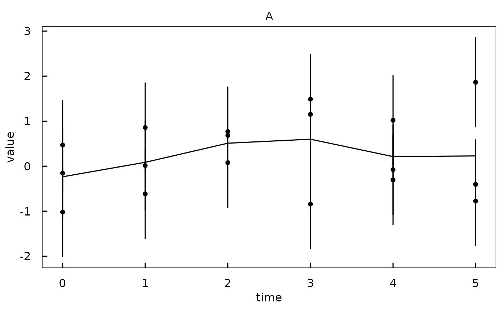

Builds the objective function of a fit: the -2 log likelihood of the
data given the prediction, up to a constant, summed over the conditions of
the data.
Usage
normL2(
data,
x,
errmodel = NULL,
times = NULL,
attrName = "data",
optBLOQ = c("M3", "M1", "M4NM", "M4BEAL"),
multipleShootingControl = NULL
)Arguments
- data
Object of class datalist. Each condition of the data has to be a condition of
x.- x
Object of class prdfn.
- errmodel
Optional object of class obsfn. The error model may be defined only for a subset of conditions.
- times
Optional time points at which the prediction is evaluated in addition to the data times: a numeric vector for all conditions, which then share one grid, or a list named by condition, which gives each condition a separate grid. The prediction of a condition starts at the first time of the grid, where the initial values take effect, so a single time per condition sets the start of that condition. A model built with
odemodel(..., includeTimeZero = TRUE), the default, has 0 in every grid and so starts at 0 at the latest. Fixed-time events before the start do not fire. Event times should be included if the model uses events.- attrName
Character string. The objective value is additionally returned as an attribute of this name, and the sum of squares behind it under
chi2. Adding objectives pools the terms sharing anattrName, sochi2stays one number; where twoattrNames meet it splits intochi2_<attrName>per contribution.- optBLOQ
Character. NONMEM-style treatment of below-LOQ rows (those with
value <= lloqin the data). One of"M1"(drop BLOQ rows from the objective),"M3"(censored log-likelihood, default),"M4NM"or"M4BEAL"(truncated variants; require non-negative LOQ).- multipleShootingControl
NULL(default),TRUEor a list, which turns on multiple shooting intrust();TRUEislist(), every entry at the default. Can be changed, or switched off withNULL, bycontrols(obj, "multipleShootingControl") <-, also on a sum holding the objective. An unknown entry is an error. Entries:nodes:"auto"(default),"transitions", or node times, a numeric vector for all conditions or a list named by condition."auto"cuts segments where they grow, fail or miss their data;"transitions"places a node before every fast change of the data and keeps the layout fixed.growth: largest spectral radius of a segment's propagation matrix that"auto"accepts, default10.misfit: root mean square of a segment's weighted residuals above which"auto"cuts it, default3.charts: named character,"log10","linear"or"angle"per state, the coordinate of the node values. DefaultNULL, all linear.scale: named numeric, the scale of each state's gaps and node steps. Default1on a log10 or angle chart, else the range of the state in the data or, unobserved, in a simulation at the start.init: start of the node values,"data"(default),"spline","simulation", or a list asfit$multipleShooting$nodesreturns it, which needs explicitnodes.minPoints: fewest data points either half of a cut segment keeps. Default one more than the number of states.breaks: node times at which continuity is not enforced, for all conditions or a list named by condition. DefaultNULL. NeedshessianMethod = "gn"intrust().
xhas to be a chaing * x * pwith one prediction function fromXs(), built onodemodel(..., includeTimeZero = FALSE). The method and the node layout are described in the methods article Multiple shooting.
Value
An objective function of class objfn, called as obj(pars, ...), see
section Calling a dMod function. It returns an objlist whose value is
the sum of the weighted squared residuals and, for error models and
censored data, of the further terms of -2 log likelihood. With
multipleShootingControl the objective called as a function is still the
single-shooting one; trust() and mstrust() optimize it by multiple
shooting, also as a summand.
Details
Combine objectives with +, see sumobjfn.
A chain g * x * p with x from Xs() of the cppDE backend, Xt() or,
for values alone, Xf(), g and errmodel from Y(), and p a product
of Pexpl() and Pimpl() transformations or absent is evaluated in C++,
in parallel over the conditions on getOption("dMod2.cores"), to the
values and derivatives of the evaluation in R. Any other model is
evaluated in R, as is every model under options(dMod2.evaluation = "R").
Calling a dMod function
The leading arguments depend on the class and are matched by position or by name:
prediction function:
x(times, pars, ...), returning a prdlist;observation function:
g(out, pars, ...)with a prdlistout, returning a prdlist;parameter transformation:
p(pars, ...), returning a list with one parvec per condition;objective function:
obj(pars, ...), returning an objlist.
pars is a named numeric vector. If it has a deriv attribute, as the
output of a parameter transformation does, the derivatives are taken with
respect to the parameters behind it. A composition is called according to
the resulting class:
g * x * p is a prediction function, (g * x * p)(times, pars).
The other arguments are named:
fixed: named numeric vector of parameters that enter the evaluation without derivatives. DefaultNULL.deriv:TRUE(default) returns first derivatives with respect topars.deriv2:TRUEreturns second derivatives as well. DefaultFALSE. Every function of the chain has to be built for them, see the argumentsderiv2andderivModeofodemodel(),Y()andP().hessian: objective functions only, see the table below. DefaultNULL.sweep: objective functions only."forward"(default) propagates the sensitivities through the chain;"reverse"computes the gradient in one backward pass, whose cost does not grow with the number of parameters."reverse"needs every function of the chain built withderivMode = "reverse", and with"forward-reverse"forderiv2 = TRUE.conditions: character vector, the conditions to evaluate. Default all conditions of the function.env: environment for intermediate results. DefaultNULL, a new one. An objective function stores the prediction there aspredictionand returns the environment as attributeenv.cores: number of threads for the ODE solves and the residual kernel. DefaultgetOption("dMod2.cores", 1L).
Prediction, observation and parameter functions accept hessian and
sweep and ignore them. With deriv = TRUE an objective function returns
this Hessian:
sweep | hessian | deriv2 = FALSE | deriv2 = TRUE |
"forward" | NULL, TRUE | Gauss-Newton | exact |
"forward" | FALSE | none | none, with a warning |
"reverse" | NULL | none | exact |
"reverse" | TRUE | none, with a warning | exact |
"reverse" | FALSE | none | none, with a warning |
hessian = "sparse" returns the Gauss-Newton Hessian of the forward sweep
as a sparse Matrix, assembled from the blocks of the conditions; trust()
factorizes it where the argument sparse takes the sparse path, and vcov()
solves it for the columns of which.
With deriv = FALSE it returns the value alone.
See also
datapointL2(), constraintL2(), res(); the guide chapters
Setting up models and
Sensitivities, the methods
article Sensitivities and Hessians.
Examples
# \donttest{
## Generate a prediction function
times <- 0:5
grid <- data.frame(name = "A", time = times, row.names = paste0("p", times))
x <- Xd(grid, condition = "C1")
pars <- structure(rep(0, nrow(grid)), names = row.names(grid))
## Simulate data
data.list <- lapply(1:3, function(i) {
prediction <- x(times, pars + rnorm(length(pars), 0, 1))
transform(as.data.frame(prediction), sigma = 1)
})
data <- as.datalist(do.call(rbind, data.list))
## Generate objective function based on data and model
## Then fit the data and plot the result
obj <- normL2(data, x)
myfit <- trust(obj, pars, rinit = 1, rmax = 10)
plot(x(times, myfit$argument), data)

# }